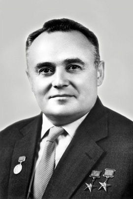

Один из основных создателей советской ракетно-космической техники, обеспечившей стратегический паритет и сделавшей СССР передовой ракетно-космической державой, и одна из ключевых фигур в освоении человеком космоса, один из основателей практической космонавтики. В официальных документах СССР его называли просто «Главный конструктор». Под его руководством был организован и осуществлён запуск первого искусственного спутника Земли и первого космонавта Юрия Гагарина.
Родился 12 января 1907 г. (30 декабря 1906 г. по старому стилю) в городе Житомир Волынской губернии Российской империи (ныне территория Украины). В 1924 г. окончил Одесскую профессиональную строительную школу. В 1924 г. поступил в Киевский политехнический институт (ныне Национальный технический университет Украины "Киевский политехнический институт имени Игоря Сикорского"), где проучился два года, освоив общие инженерные дисциплины по авиационной технике. Осенью 1926 г. перевелся на аэромеханический факультет Московского высшего технического училища (МВТУ; ныне Московский государственный технический университет им. Н. Э. Баумана). По окончании МВТУ в 1930 г. получил специальность инженера-аэромеханика (руководителем его дипломного проекта "Легкомоторный двухместный самолет СК-4" был авиаконструктор Андрей Туполев). В том же году окончил Московскую школу летчиков-планеристов. В 1930-1931 гг. - старший инженер, затем руководитель группы Центрального аэрогидродинамического института в Москве В сентябре 1931 г. Сергей Королев стал одним из основателей Группы изучения реактивного движения 1935 г. располагается в г. Жуковском Московской обл.). 30 августа 1946 г. Королева назначили главным конструктором баллистических ракет дальнего действия и начальником отдела №3 Специального конструкторского бюро (СКБ) В 1948 г. Королев выступил одним из основателей в МВТУ кафедры" "Баллистические ракеты". 14 января 1966 г. Сергей Королев скоропостижно скончался в Москве.
первая отечественная баллистическая ракета Р-1 (1948), проведены первые пуски геофизической ракеты Р-1А (1949), баллистической ракеты средней дальности ракеты Р-5 (1953), баллистической ракеты на долгохранимых компонентах топлива Р-11 (1953), межконтинентальной баллистической ракеты Р-7 (1957), а также состоялся первый пуск баллистической ракеты Р-11ФМ с подводной лодки (1955). Осуществлены запуски первого искусственного спутника Земли (1957), второго спутника с собакой Лайкой на борту (1957), первых автоматических межпланетных станций на Луну (1959), Марс (1960), Венеру (1961) и др. Разработаны ракеты-носители "Восток" (первый успешный пуск состоялся в 1959 г.), "Молния" (1961). Созданы космические корабли "Восток" и "Восход". На "Востоке-1" совершил полет первый космонавт планеты Юрий Гагарин (1961), с борта "Восхода-2" Алексей Леонов выполнил первый в истории выход в открытый космос (1965). Были начаты работы по пилотируемому лунному комплексу Н1-Л3, разработан проект корабля "Союз".